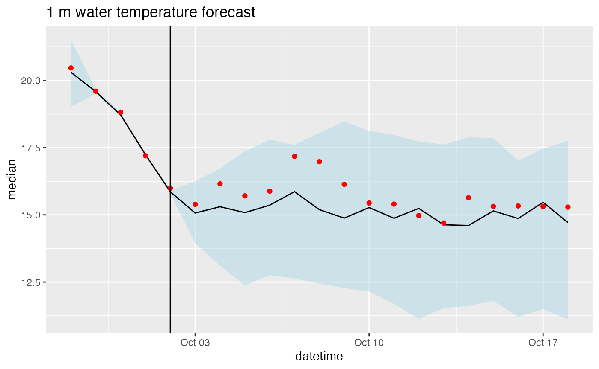

FLAREr example
flare-example-vignette.RmdBackground
This document serves as a users guide and a tutorial for the FLARE (Forecasting Lake and Reservoir Ecosystems) system (Thomas et al. 2020). FLARE generates forecasts and forecast uncertainty of water temperature and water quality for 1 to 35-dau ahead time horizon at multiple depths of a lake or reservoir. It uses data assimilation to update the initial starting point for a forecast and the model parameters based a real-time statistical comparisons to observations. It has been developed, tested, and evaluated for Falling Creek Reservoir in Vinton,VA (Thomas et al. 2020) and National Ecological Observatory Network lakes (Thomas et al. 2023
FLARE is a set of R scripts that
- Generating the inputs and configuration files required by the General Lake Model (GLM)
- Applying data assimilation to GLM
- Processing and archiving forecast output
- Visualizing forecast output
FLARE uses the 1-D General Lake Model (Hipsey et al. 2019) as the mechanistic process model that predicts hydrodynamics of the lake or reservoir. For forecasts of water quality, it uses GLM with the Aquatic Ecosystem Dynamics library. The binaries for GLM and GLM-AED are included in the FLARE code that is available on GitHub. FLARE requires GLM version 3.3 or higher.
More information about the GLM can be found here:
FLARE development has been supported by grants from National Science Foundation (CNS-1737424, DEB-1753639, EF-1702506, DBI-1933016, DEB-1926050)
Requirements
- RStudio
-
FLARErR package -
FLARErdependencies
1: Set up
First, install the FLAREr package from GitHub. There
will be other required packages that will also be downloaded.
remotes::install_github("flare-forecast/FLAREr")Second, download the General Lake Model (GLM) code. You can get in using multiple pathways
The easiest way is to install the GLM3r package from
Github using
remotes::install_github("rqthomas/GLM3r")
#> Using GitHub PAT from the git credential store.
#> Skipping install of 'GLM3r' from a github remote, the SHA1 (16924165) has not changed since last install.
#> Use `force = TRUE` to force installationAfter installing GLM3r you need to set an environment variable that points to the GLM code.
Sys.setenv('GLM_PATH'='GLM3r')Third, create a directory that will be your working directory for
your FLARE run. To find this directory on your computer you can use
print(lake_directory)
lake_directory <- normalizePath(tempdir(), winslash = "/")
dir.create(file.path(lake_directory, "configuration/default"), recursive = TRUE)
dir.create(file.path(lake_directory, "targets")) # For QAQC data
dir.create(file.path(lake_directory, "drivers")) # Weather and inflow forecasts2: Configuration files
First, FLAREr requires two configuration yaml files. The
code below copies examples from the FLAREr package.
file.copy(system.file("extdata", "configuration", "default", "configure_flare.yml", package = "FLAREr"), file.path(lake_directory, "configuration", "default", "configure_flare.yml"))
#> [1] TRUE
file.copy(system.file("extdata", "configuration", "default", "configure_run.yml", package = "FLAREr"), file.path(lake_directory, "configuration", "default", "configure_run.yml"))
#> [1] TRUESecond, FLAREr requires a set of configuration CSV
files. The CSV files are used to define the states that are simulated
and the parameters that are calibrated. The code below copies examples
from the FLAREr package
file.copy(system.file("extdata", "configuration", "default", "parameter_calibration_config.csv", package = "FLAREr"), file.path(lake_directory, "configuration", "default", "parameter_calibration_config.csv"))
#> [1] TRUE
file.copy(system.file("extdata", "configuration", "default", "states_config.csv", package = "FLAREr"), file.path(lake_directory, "configuration", "default", "states_config.csv"))
#> [1] TRUE
file.copy(system.file("extdata", "configuration", "default", "depth_model_sd.csv", package = "FLAREr"), file.path(lake_directory, "configuration", "default", "depth_model_sd.csv"))
#> [1] TRUE
file.copy(system.file("extdata", "configuration", "default", "observations_config.csv", package = "FLAREr"), file.path(lake_directory, "configuration", "default", "observations_config.csv"))
#> [1] TRUEThird, FLAREr requires GLM specific configurations files. For applications that require on water temperature, only the GLM namelist file is needed. Applications that require other water quality variables will require additional namelist files that are associated with the AED model.
file.copy(system.file("extdata", "configuration", "default", "glm3.nml", package = "FLAREr"), file.path(lake_directory, "configuration", "default", "glm3.nml"))
#> [1] TRUE3: Observation and driver files
Since the FLAREr package for general application, scripts to download and process observation and drivers are not included in the package. Therefore the application of FLARE to a lake will require a set of additional scripts that are specific to the data formats for the lakes. The example includes files for application to FCR.
file.copy(from = system.file("extdata/targets", package = "FLAREr"), to = lake_directory, recursive = TRUE)
#> [1] TRUE
file.copy(from = system.file("extdata/drivers", package = "FLAREr"), to = lake_directory, recursive = TRUE)
#> [1] TRUEFirst, FLAREr requires the observation file to have a specific name (observations_postQAQC_long.csv) and format.
head(read_csv(file.path(lake_directory,"targets/fcre/fcre-targets-insitu.csv"), show_col_types = FALSE))
#> # A tibble: 6 × 5
#> datetime site_id depth observation variable
#> <dttm> <chr> <dbl> <dbl> <chr>
#> 1 2022-09-28 00:00:00 fcre 0 20.5 temperature
#> 2 2022-09-29 00:00:00 fcre 0 19.6 temperature
#> 3 2022-09-30 00:00:00 fcre 0 18.8 temperature
#> 4 2022-10-01 00:00:00 fcre 0 17.2 temperature
#> 5 2022-10-02 00:00:00 fcre 0 16.0 temperature
#> 6 2022-10-03 00:00:00 fcre 0 15.4 temperature2: Configure simulation (GLM)
The configuration functions are spread across the files. These files are described in more detail below
glm3.nmlconfigure_flare.ymlconfigure_run.ymlstates_config.csvobservations_config.csvparameter_calibration_config.csvdepth_model_sd.csv
configure_run.yml
This file is the configuration file that define the specific timing of the run.
-
restart_file: This is the full path to the file that you want to use as initial conditions for the simulation. You will set this toNAif the simulation is not a continuation of a previous simulation. -
sim_name: a string with the name of your simulation. This will appear in your output file names -
forecast_days: This is your forecast horizon. The max is16days. Set to0if only doing data assimilation with observed drivers. -
start_datetime: The date time of day you want to start a forecast. Because GLM is a daily timestep model, the simulation will start at this time. It usesYYYY-MM-DD mm:hh:ssformat and must only be a whole hour. It is in the UTC time. It can be any hour if only doing data assimilation with observed drivers (forecast_days = 0). If forecasting (forecast_days > 0) it is required to match up with the availability of a NOAA forecast. NOAA forecasts are available at the following times UTC so you must select a local time that matches one of these times (i.e., 07:00:00 at FCR is the 12:00:00 UTC NOAA forecast).- 00:00:00 UTC
- 06:00:00 UTC
- 12:00:00 UTC
- 18:00:00 UTC
-
forecast_start_datetime: The date that you want forecasting to start in your simulation. Uses the YYYY-MM-DD mm:hh:ss format (e.g., “2019-09-20 00:00:00”). The difference betweenstart_timeandforecast_start_datetimedetermines how many days of data assimilation occur using observed drivers before handing off to forecasted drivers and not assimilating data -
configure_flare: name of FLARE configuration file located in yourconfiguration/[config_set]directory (configure_flare.yml) -
configure_obs: name of optional observation processing configuration file located in yourconfiguration/[config_set]directory (configure_obs.yml) -
use_s3: use s3 cloud storage for saving forecast, scores, and restart files.
glm3.nml
glm3.nml is the configuration file that is required by
GLM. It can be configured to run only GLM or GLM + AED. This version is
already configured to run only GLM for FCR and you do not need to modify
it for the example simulation.
3: Run your GLM example simulation
Read configuration files
The following reads in the configuration files and overwrites the directory locations based on the lake_directory and directories provided above. In practice you will specific these directories in the configure file and not overwrite them.
next_restart <- FLAREr::run_flare(lake_directory = lake_directory,configure_run_file = "configure_run.yml", config_set_name = "default")
#> Running forecast that starts on: 2022-09-28 00:00:00
#> Retrieving Observational Data...
#> Generating Met Forecasts...
#> Registered S3 method overwritten by 'tsibble':
#> method from
#> as_tibble.grouped_df dplyr
#> Registered S3 method overwritten by 'quantmod':
#> method from
#> as.zoo.data.frame zoo
#> Creating inflow/outflow files...
#> Setting states and initial conditions...
#> Running time step 1/20 : 2022-09-28 00:00 - 2022-09-29 00:00 [2024-08-27 07:10:55.068636]
#> performing data assimilation
#> zone1temp: mean 11.1488 sd 0.9754
#> zone2temp: mean 14.2376 sd 1.3698
#> lw_factor: mean 0.978 sd 0.0554
#> Running time step 2/20 : 2022-09-29 00:00 - 2022-09-30 00:00 [2024-08-27 07:10:57.148152]
#> performing data assimilation
#> zone1temp: mean 11.8718 sd 1.2045
#> zone2temp: mean 14.0601 sd 1.537
#> lw_factor: mean 0.9758 sd 0.0508
#> Running time step 3/20 : 2022-09-30 00:00 - 2022-10-01 00:00 [2024-08-27 07:10:59.005113]
#> performing data assimilation
#> zone1temp: mean 11.6904 sd 1.2579
#> zone2temp: mean 13.8491 sd 1.8128
#> lw_factor: mean 0.9224 sd 0.0462
#> Running time step 4/20 : 2022-10-01 00:00 - 2022-10-02 00:00 [2024-08-27 07:11:00.987831]
#> performing data assimilation
#> zone1temp: mean 11.9015 sd 1.2679
#> zone2temp: mean 14.0854 sd 1.8746
#> lw_factor: mean 0.9495 sd 0.0388
#> Running time step 5/20 : 2022-10-02 00:00 - 2022-10-03 00:00 [2024-08-27 07:11:02.944947]
#> zone1temp: mean 11.9262 sd 1.6037
#> zone2temp: mean 13.9903 sd 2.158
#> lw_factor: mean 0.9537 sd 0.0421
#> Running time step 6/20 : 2022-10-03 00:00 - 2022-10-04 00:00 [2024-08-27 07:11:04.780649]
#> zone1temp: mean 11.8605 sd 1.7484
#> zone2temp: mean 13.836 sd 2.6358
#> lw_factor: mean 0.9504 sd 0.0423
#> Running time step 7/20 : 2022-10-04 00:00 - 2022-10-05 00:00 [2024-08-27 07:11:06.591829]
#> zone1temp: mean 11.8767 sd 2.2094
#> zone2temp: mean 13.9167 sd 2.6294
#> lw_factor: mean 0.9526 sd 0.0519
#> Running time step 8/20 : 2022-10-05 00:00 - 2022-10-06 00:00 [2024-08-27 07:11:08.478187]
#> zone1temp: mean 11.924 sd 2.2463
#> zone2temp: mean 14.0422 sd 2.9333
#> lw_factor: mean 0.9506 sd 0.049
#> Running time step 9/20 : 2022-10-06 00:00 - 2022-10-07 00:00 [2024-08-27 07:11:10.384546]
#> zone1temp: mean 12.0518 sd 2.2155
#> zone2temp: mean 13.9569 sd 2.8478
#> lw_factor: mean 0.9492 sd 0.051
#> Running time step 10/20 : 2022-10-07 00:00 - 2022-10-08 00:00 [2024-08-27 07:11:12.221704]
#> zone1temp: mean 11.9152 sd 2.1706
#> zone2temp: mean 13.8616 sd 3.09
#> lw_factor: mean 0.9447 sd 0.0552
#> Running time step 11/20 : 2022-10-08 00:00 - 2022-10-09 00:00 [2024-08-27 07:11:14.096004]
#> zone1temp: mean 12.2123 sd 2.4608
#> zone2temp: mean 13.731 sd 3.2854
#> lw_factor: mean 0.9456 sd 0.055
#> Running time step 12/20 : 2022-10-09 00:00 - 2022-10-10 00:00 [2024-08-27 07:11:15.900994]
#> zone1temp: mean 12.1713 sd 2.6675
#> zone2temp: mean 13.6852 sd 3.0489
#> lw_factor: mean 0.9473 sd 0.0617
#> Running time step 13/20 : 2022-10-10 00:00 - 2022-10-11 00:00 [2024-08-27 07:11:17.707174]
#> zone1temp: mean 12.4468 sd 2.8761
#> zone2temp: mean 13.9476 sd 3.3064
#> lw_factor: mean 0.9457 sd 0.0679
#> Running time step 14/20 : 2022-10-11 00:00 - 2022-10-12 00:00 [2024-08-27 07:11:19.510767]
#> zone1temp: mean 12.5876 sd 3.5795
#> zone2temp: mean 13.9964 sd 3.0148
#> lw_factor: mean 0.9519 sd 0.0646
#> Running time step 15/20 : 2022-10-12 00:00 - 2022-10-13 00:00 [2024-08-27 07:11:21.33385]
#> zone1temp: mean 12.4809 sd 3.646
#> zone2temp: mean 13.9342 sd 3.3116
#> lw_factor: mean 0.949 sd 0.0719
#> Running time step 16/20 : 2022-10-13 00:00 - 2022-10-14 00:00 [2024-08-27 07:11:23.118942]
#> zone1temp: mean 12.7317 sd 3.5974
#> zone2temp: mean 13.8041 sd 2.9973
#> lw_factor: mean 0.9447 sd 0.0855
#> Running time step 17/20 : 2022-10-14 00:00 - 2022-10-15 00:00 [2024-08-27 07:11:24.987436]
#> zone1temp: mean 12.743 sd 3.8068
#> zone2temp: mean 13.7729 sd 2.9052
#> lw_factor: mean 0.9477 sd 0.0863
#> Running time step 18/20 : 2022-10-15 00:00 - 2022-10-16 00:00 [2024-08-27 07:11:26.871182]
#> zone1temp: mean 12.7494 sd 3.8094
#> zone2temp: mean 13.7964 sd 2.8735
#> lw_factor: mean 0.9499 sd 0.0869
#> Running time step 19/20 : 2022-10-16 00:00 - 2022-10-17 00:00 [2024-08-27 07:11:28.690417]
#> zone1temp: mean 12.5893 sd 3.7333
#> zone2temp: mean 13.8922 sd 2.8682
#> lw_factor: mean 0.9506 sd 0.0896
#> Running time step 20/20 : 2022-10-17 00:00 - 2022-10-18 00:00 [2024-08-27 07:11:30.505973]
#> zone1temp: mean 12.623 sd 3.9417
#> zone2temp: mean 14.1163 sd 2.8204
#> lw_factor: mean 0.9421 sd 0.0922
#> Writing restart
#> Writing forecast
#> starting writing dataset
#> ending writing dataset
#> Putting forecast
#> successfully generated flare forecats for: fcre-2022-10-02-testVisualizing output
df <- arrow::open_dataset(file.path(lake_directory,"forecasts/parquet")) |> collect()
head(df)
#> # A tibble: 6 × 14
#> reference_datetime datetime pub_datetime depth family
#> <dttm> <dttm> <dttm> <dbl> <chr>
#> 1 2022-10-02 00:00:00 2022-09-28 00:00:00 2024-08-27 11:11:32 0 ensemble
#> 2 2022-10-02 00:00:00 2022-09-28 00:00:00 2024-08-27 11:11:32 0 ensemble
#> 3 2022-10-02 00:00:00 2022-09-28 00:00:00 2024-08-27 11:11:32 0 ensemble
#> 4 2022-10-02 00:00:00 2022-09-28 00:00:00 2024-08-27 11:11:32 0 ensemble
#> 5 2022-10-02 00:00:00 2022-09-28 00:00:00 2024-08-27 11:11:32 0 ensemble
#> 6 2022-10-02 00:00:00 2022-09-28 00:00:00 2024-08-27 11:11:32 0 ensemble
#> # ℹ 9 more variables: parameter <int>, variable <chr>, prediction <dbl>,
#> # forecast <dbl>, variable_type <chr>, log_weight <dbl>, site_id <chr>,
#> # model_id <chr>, reference_date <chr>
df |>
filter(variable == "temperature",
depth == 1) |>
ggplot(aes(x = datetime, y = prediction, group = parameter)) +
geom_line() +
geom_vline(aes(xintercept = as_datetime(reference_datetime))) +
labs(title = "1 m water temperature forecast")
targets_df <- read_csv(file.path(lake_directory, "targets/fcre/fcre-targets-insitu.csv"), show_col_types = FALSE)
combined_df <- left_join(df, targets_df, by = join_by(datetime, depth, variable, site_id))
combined_df |>
filter(variable == "temperature",
depth == 1) |>
ggplot(aes(x = datetime, y = prediction, group = parameter)) +
geom_line() +
geom_vline(aes(xintercept = as_datetime(reference_datetime))) +
geom_point(aes(y = observation), color = "red") +
labs(title = "1 m water temperature forecast")
df |>
filter(variable == "lw_factor") |>
ggplot(aes(x = datetime, y = prediction, group = parameter)) +
geom_line() +
geom_vline(aes(xintercept = as_datetime(reference_datetime))) +
labs(title = "lw_factor parameter") ## 5. Comparing to observations
## 5. Comparing to observations